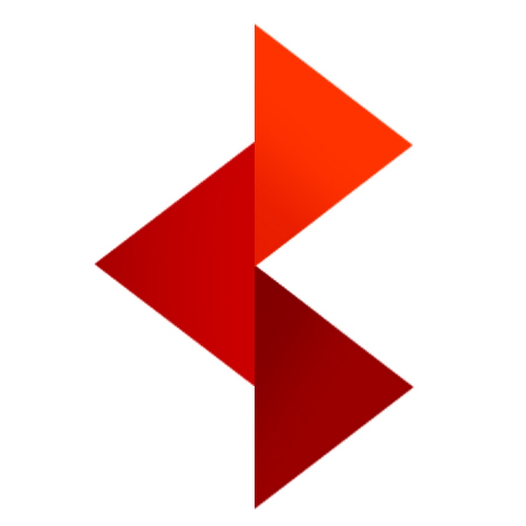

Monero Adoption Fund
Our philosophy
Tacking Capital’s Monero Adoption Fund exists to help facilitate adoption and value growth of the privacy-enhanced cryptocurrency Monero as a means of transaction and build a broad, open and privacy-focused Monero ecosystem.
Our mission
To provide industry-leading rates of return for our investors; by
- Investing into the Monero privacy-enhanced cryptocurrency while
- Facilitating Monero adoption as a transaction medium through investment and
- Investing in businesses essential to creating and strengthening the Monero ecosystem financially and technologically.
Who are our advisors?
Tacking Capital's Monero Adoption Fund is advised by several established industry experts from the cryptocurrency industry, venture capital, decentralized finance and privacy tech firms with extensive global and regional experience.
Aleksa
Burmazović

|
Akston GroupIndependent Cryptocurrency Investment AdvisorAdvised an investment fund on asset management in 2017-18 ICO market, with an ROI of 44% in BTC terms. Technical, fundamental analysis of cryptocurrency projects. |
|  |
Startup Societies FoundationChief Operations OfficerContent creation, event organisation, non-profit fundraising, non-profit legal experience, open-source research in the blockchain, charter city and special jurisdiction space. |

|
Adrianople GroupProject ManagerCreatively devising new intelligence products in the special economic zone space, selling and following up on same products with clients, creating open-source and human-source intelligence reports, managing a 3-person research team. |

|
Abed GroupMetaverse Special Economic Zone Project LeadProject lead on a gov-tech interoperability platform for special economic zones. Hiring and managing a team, business plan design, demand forecasting, fundraising and general management of a startup incubated in a reg-tech accelerator. |
Mac
Davis

|
CryptoninersFounder & CSOBitcoin mining and investment firm, spent years developing investor relations. |

|
Exosphere HQStaff Mentor and Curriculum DesignerDeveloped biohacking curriculum at Exosphere disruptive entrepreneurship research and training incubator. |

|
Minicircle, IncFounder & CEOCharter city-based HIV vaccine development and longevity gene therapy research & commercialization. |

|
Prophase BiostudiosFounder and Chairman501(c)3 nonprofit open-access biotechnology research and entrepreneurship training laboratory with a focus on CRISPR. |
|
|
Polymicrobial Systems LLCFounder & CEOBioprocessing R&D and pharmaceutical IP development in gene therapy vector design, characterization and GMP production at scale. |
Andrej
Škraba

|
NiceHashChief Marketing OfficerResponsible for executing the global marketing strategy of a leading platform for cryptocurrency mining and trading with over 1.5 million users worldwide. |

|
Paralink NetworkChief Marketing OfficerInvolved in raising a private investment round, successful IDO on Polkastarter, token DEX/CEX listings and marketing engagement at the multichain oracle platform for DeFi and other blockchain applications. |

|
NFTfiChief Marketing OfficerResponsible for marketing the leading liquidity protocol for NFTs. |

|
EK Water BlocksHead of MarketingResponsible for rapidly growing revenue and direct sales percentage for the premium PC liquid cooling manufacturer through effective marketing strategy. |
More advisors to come!
What do we invest in?
- Monero
- Monero-adjacent business
- Privacy, open-source and encryption-focused businesses and technology prospects
- Fintech and decentralized finance
- Peer-to-peer markets and digital marketplaces
Monero
Monero (XMR) is a decentralized privacy-enhanced cryptocurrency with complete fungibility
launched in 2014.
Everything inside the Monero blockchain ecosystem is obfuscated: transactions, balances,
amounts.
Monero has an unlimited supply with a constant mining reward. This ensures a very small
inflation rate that mathematically tends to zero.
Monero uses a proof-of-work algorithm called RandomX. It is egalitarian and ASIC-resistant by
design and ensures a truly decentralized mining consensus.
Monero has the third largest developer community among all cryptocurrencies and regularly
applies privacy and usability updates.
Tacking Capital intends to integrate Monero wherever possible, including:
- as an investment held by the fund
- as a means of paying for goods and services
- as part of our management company payroll
- as a means of accepting commitments into the fund
- as a means of making investment into our portfolio companies
By facilitating Monero adoption we hope to create stable, sustainable, transaction-driven demand for the privacy-enhanced cryptocurrency and increase token value.
Comparing Monero to other means of payment, stores of value and cryptocurrencies
| Gold | Paper Fiat | Digital Fiat |  Bitcoin
(BTC) Bitcoin
(BTC) |
||
|---|---|---|---|---|---|
| Durable | Yes | No | Yes | Yes | Yes |
| Regulation of circulating amount | Decentralized with low inflation | Centralized | Centralized | Decentralized with low deflation | Decentralized with low inflation |
| Digital transfer | No | No | Yes | Yes | Yes |
| Fungible | Depends (?) | Depends (?) | No | No | Yes |
| Portable | Depends on quantity | Depends on quantity | Yes | Yes | Yes |
| Can be counterfeited | Depends (?) | Yes | No | No | No |
Monero is the cryptocurrency
Monero is at time of writing a cryptocurrency barely making the top 30 by market capitalization.
This is despite the fact that it has an unambiguously clear use case and utility as an anonymous
and seamless means of transacting, the third largest developer community among all
cryptocurrencies and some of the highest rates of use as a transaction medium. Among
privacy-enhanced cryptocurrencies it is by far the most widely accepted and dwarfs potential
competitors such as Zcash by number of transactions, scale of adoption and market
capitalization.
The reasons it trails behind other cryptocurrencies less widely used as a transaction medium in
terms of market cap are mainly:
- Lack of listing on widely used centralized exchanges, especially in the United States
- Institutional investors’ fears of regulatory risk against privacy-enhanced cryptocurrencies
- The lack of a central, representative body or team to market Monero as an investment option and a community primarily focused on the technological framework for creating an efficient and private transaction medium
Monero-adjacent businesses
Monero adjacent businesses refers to businesses whose main business lies in supporting the
Monero ecosystem or providing it with goods and services. Examples can include everything from
hardware used to mine Monero to point of sale software and hardware or legal, consulting and
accounting services for business transacting using Monero.
One example of this is CPU manufacturers that produce and hardware that utilizes ARM CPUs. The
RandomX algorithm is already optimized for mining on ARM64
architecture CPUs and these can provide hardware that mines monero in a more cost, energy and temperature effective manner, addressing many
public and practical concerns about Monero’s proof-of-work algorithm. Additionally, increased
Monero value could facilitate demand for CPUs that are used to mine Monero.
Privacy, trustless, open-source and encryption-focused prospects
With more business and social life moving online, an increasing proportion of the world’s
transactions are taking place digitally and more and more of our sensitive information is stored
online. This has improved understanding of the importance of digital anonymity and privacy, and
a greater awareness of the pervasiveness of digital surveillance.
This awareness has boosted demand for software and hardware solutions that can provide privacy
and anonymity on the web. Tacking Capital hopes to realize strong returns by investing in clear,
practical digital privacy solutions with a strong ideological basis in keeping software and
hardware open-source where sensible.
We also foresees significant cohesion effects with integrating Monero into decentralized,
privacy and encryption focused businesses, as maintaining online anonymity and security is
dependent on a broader, privacy-focused ecosystem, of which truly anonymous, decentralized
transactions are an essential part of.
Fintech and decentralized finance
The global financial technology market is
expected to grow gradually and reach a market value of approximately $324 billion by
2026, growing at a compound annual rate of about 25.18% over the period of 2022-2027.
Fintech and decentralized finance (DeFi) prospects represent not only one of the fastest growing
sectors we can direct investment towards, but also exciting ways to build on- and off-ramps for
transitioning between Monero and fiat currency, the lack of which is a crucial barrier to
overcome in achieving widespread Monero adoption.
Acquiring Monero and transferring it on-chain must become as seamless, simple and as easy as
possible through integration into fintech services such as neobanks. While these businesses may
not be privacy-oriented in and of themselves, they provide a variety of on and off-ramps that
peer to peer services can utilize to expand the private part of the Monero ecosystem.
Creating many and varied ways in which to procure Monero and exchange it into fiat money or
other cryptocurrencies can also help building resilience from regulatory threats and ensures
that Monero adoption has no single point of failure.
Peer-to-peer markets and digital marketplaces
The peer-to-peer (P2P) economy has always been ideally suited to cryptocurrency transactions,
with most transactions presently using cash as a means of payment in-person and services such as
PayPal for digital transactions. The use of the latter can cause problems for participants,
especially when done at a large scale or involving large transactions. Likewise, the use of
physical currency is limited to in-person transactions.
The use of Monero can help participants in P2P digital markets avoid risks inherent to
centralized payment processors while allowing these marketplaces to potentially act as an escrow
service for on-chain Monero transactions.
The P2P economy is both established and growing rapidly by expanding into spaces traditionally
served by large, centralized institutions hesitant to adopt cryptocurrency payments. We
therefore see prospects in the P2P sector as being both high-growth, return generating
investments and excellent means to drive Monero adoption.
Achieving returns
Tacking Capital’s Monero Adoption Fund relies on two main drivers of returns. The first is the
increase in the valuation of equity held in firms invested in (we use the Fair Value method for
estimating internal rate of return of private equity investments). Here we rely primarily on our
knowledge of the target industry, Monero adoption driving attractiveness for certain customer
demographics and our top of the line advisors expertise for making industry leading picks.
The other main driver of returns is the market value of Monero assets held by the fund. This is
likely to increase substantially over time thanks to organically increasing demand for private
transactions, increased adoption accelerating transaction-driven Monero demand and
well-publicized adoption driving investment demand for Monero.
Why now?
The past several years have seen important trends in society, the crypto industry, fintech and
privacy that necessitate a social and market need for Monero and ideal business conditions for
Tacking Capital’s investment thesis.
Demand for data privacy and online anonymity are at an all-time high with the global data privacy software market projected to grow from $2.36 billion
in 2022 to $25.85 billion by 2029, at a CAGR of 40.8%.
Increasing global political instability and financial and digital surveillance is creating
more and more demand for ways in which people could communicate and transact anonymously online.
Monero fulfils this role, bolstered and complemented by the technologies that Tacking Capital
invests in.
Soaring inflation following years of monetary policy mismanagement has further diminished already faltering trust in the federal reserve and central bank issued
fiat currency. With rising interest rates potentially decimating stock and crypto markets,
investors will be looking for a safe haven from inflation and a growing number of fiat money
skeptical consumers will be looking for alternate means of storing value and transacting with.
Monero has the technological basis to serve as both and the culture around it naturally appeals
to those wary of fiat money and the central banks that mismanage it.
The end of x86 architecture in CPUs will help further decentralize Monero
mining and make it more environmentally friendly and energy and power efficient. It will also
create massive opportunities for prospects engaged with superior ARM and Risc-V architecture
CPUs, which Tacking Capital is ideally positioned to take advantage of and ensure they are
integrated into a broader Monero ecosystem.
The main barrier to price growth and adoption of Monero has consistently been poor adoption at
centralized cryptocurrency exchanges and a subsequently underdeveloped commercial payment
ecosystem. Tacking Capital exists to profitably help build that ecosystem, bolstering companies
that are part of it and fulfilling rapidly growing market demand for digital privacy and
anonymity.
North America Data Privacy Software Market Size Projection, 2018-2029 (USD Million)
Public trust in government near historic lows
Why us?
We extensively support our portfolio
The Tacking Capital team provides a variety of support activities to our portfolio companies.
Some examples include:
Networking and consulting in the special jurisdiction space
Our team and advisors’ wealth of past experience with special economic zones and charter cities
can help prospects in regulatorily complex industries such as privacy-enhanced cryptocurrency
select an optimal jurisdiction for incorporation or provision of their services. Examples
include Prospera in Honduras and the Dubai Virtual Commercial City.
Monero adoption legal and accounting support
We commit to helping our portfolio companies adopt Monero as a payment method and as part of
their payroll. To this end we are partnering with leading accounting and legal firms in select
jurisdictions to minimize bureaucratic, accounting and legal hurdles that often hinder monero
adoption.
Monero use security support
Transacting in cryptocurrencies brings with it certain digital and practical security risks that
often put individuals and businesses off. By utilizing our inhouse, advisors’ and portfolio
infosec and opsec expertise and technology we hope to insulate our portfolio companies from many
of these risks
We aim to facilitate networking between our portfolio companies and encourage collaboration
where overlaps exist.
We utilize cutting edge informational and operational security
Investing in and transacting in cryptocurrency brings with it inherent risks. Tacking Capital
commits to upholding the highest standards of informational security to protect our investors’
assets. On a technical level, this extends to both hardware and software solutions. We intend to
actively work with implementing our technological portfolio companies’ privacy and information
security enhancing technologies to maintain our infosec edge, while also encouraging our other
portfolio companies to adopt necessary solutions.
Many of the industries targeted by Tacking Capital have a client-driven need for informational
and operational security. By assisting our portfolio companies in protecting their clientele and
partners’ privacy, Tacking Capital hopes to benefit its portfolio companies’ business and drive
public consciousness of the benefits of Monero adoption.
Investment principles
Political engagement averse
Most industries targeted by Tacking Capital’s investment thesis are regulatorily complex and, in
some cases, relatively novel. We believe in investing in businesses operating in the current
legal environment and focusing on growth and revenue generation and are averse to businesses
being formed in anticipation of uncertain legal changes or actively involved in government
relations to facilitate an as-of-yet non-existent legal framework in which to operate.
Investment size should be proportional to Monero adoption scale
Tacking Capital tends to favor participating in many early to mid stage funding rounds with
relatively small ticket sizes. This allows it to facilitate Monero adoption with a larger number
of businesses. Our ticket size is dependent on growth potential, the number of new Monero users
that might be created by the investment and the utility Monero adoption would create for the
prospects being invested in.
Fundamentals before ideology
At its core, Tacking Capital is a business project and a profit maximizing fund whose
purpose is to generate returns of its investors. While there is an ideological basis for the
investment thesis it adopts, the main concern with every investment must be the return it will
create for investors. To this end, Monero adoption is just as much in service of increasing its
value and by extension the value of Tacking Capital’s Monero holdings as it is about creating
utility for the investee.
No bullshit
Tacking Capital and its team commit to maintaining a no bullshit attitude towards investors,
partners, investees and in internal company culture. Being honest, transparent, direct and blunt
is a key element of our company culture and the culture of the Monero community. We strive to
maintain this as one of our highest values.
Disruption is more than a buzzword
Many financial institutions claim to pursue disruptive technologies and business models while
simultaneously dreading their social and political effects. At Tacking Capital we believe in
creative destruction and in investing in technologies and businesses that achieve exponential
growth through real disruption, which inevitably involves violating established conventions and
taking on vested interests and established business models and the technological status quo. The
success of a cryptocurrency such as Monero must consequently be measured not in its fiat market
cap, but by the degree to which it unseats the fractional reserve fiat banking and monetary
systems.
Youth
It takes young teams with fresh ideas and a will to disrupt to achieve truly disruptive business
models and implement truly disruptive technologies such as Monero. As such, Tacking Capital
wears the youth of its founders and advisors on its sleeve and prefers prospects with young or
youthful teams.
Compliance
Tacking Capital commits to ensure the legally prescribed degree of financial transparency and regulatory compliance in accordance with applicable laws in our incorporation jurisdiction. We commit to investing only in prospects compliant with the letter of the law in areas in which they incorporate and operate.
"I don't believe we shall ever have a good money again before we take the thing out of the hands of government, we can't take it violently out of the hands of government, all we can do is by some sly roundabout way introduce something that they can't stop"- F. A. Hayek
Legal disclaimer
This presentation (the “Presentation”) is being furnished on a confidential basis to a limited number of professional investors (each, a “Recipient”) on a “one-on-one” basis for the purpose of providing certain information about a potential future hedge fund (Tacking Capital), organized by a team of experts. This Presentation is for informational and discussion purposes only and is not, shall not be construed as, and does not constitute an offer, invitation or recommendation by Tacking Capital to sell or a solicitation to subscribe for or buy any interest in or assets from Tacking Capital nor shall any securities in or assets of Tacking Capital or any other entity be offered, issued or sold to, any person in any jurisdiction in which such offer, solicitation, purchase or sale would be unlawful under the securities or equivalent laws and regulations of such jurisdiction. No fund has been yet set up and no securities exist or have been offered for purchase. Persons in possession of this Presentation are required by Tacking Capital to inform themselves about any restrictions and to observe any such restrictions. The Tacking Capital team does not accept any liability to any person in relation to the distribution or possession of this Presentation in or from any jurisdiction. This Presentation is for the exclusive use of the persons to whom it is addressed and their advisors. If the Recipient has not received this Presentation from the Tacking team (or any entity authorized by Tacking Capital as confirmed by Tacking team in writing), the delivery is unauthorized and the Recipient should return this Presentation to the Tacking Capital team immediately. By accepting this Presentation, the Recipient agrees that it will, and will cause its representatives and advisors to use the information only to discuss its potential interest in Tacking Capital and for no other purpose and will not disclose any such information to any other person without the prior written consent of the Tacking Capital team. Any reproduction of this information in whole or in part is prohibited and recipients agree to return this Presentation to the Tacking team upon request. Past and targeted performance are not necessarily indicative of future results. There can be no assurance that Tacking team or its fund will achieve comparable results, that targeted returns, diversification or asset allocations will be met or that Tacking Capital or its fund will be able to implement its investment strategy and investment approach or achieve its investment objectives for its investment vehicles. Statements contained in this Presentation are based on current expectations, estimates, projections, opinions, and beliefs of the Tacking Capital team. Such statements involve known and unknown risks, uncertainties and other factors, and undue reliance should not be placed thereon. Additionally, this Presentation contains “targets” or “forward-looking statements”. Actual events or results or the actual performance of the Tacking team or its fund may differ materially from those reflected or contemplated in such statements. As a result, potential investors should not rely on such forward-looking statements, opinions or beliefs in making investment decisions. No representation or warranty is made as to the future performance or such forward-looking statements, opinions or beliefs. Certain information contained herein (including forward-looking statements, economic and market information and portfolio company data) has been obtained from published sources and/or prepared by third parties (including portfolio companies) and in certain cases has not been updated through the date hereof. While such sources are believed to be reliable, neither Tacking nor its respective affiliates or employees assume any responsibility for the accuracy or completeness of such information. The information set forth herein does not purport to be complete and is subject to change. This is not a private placement memorandum or any other sort of information memorandum on a fund; such documents will be issued separately when the fund is set up. Tacking Capital and its affiliates (including but not limited to its directors, officers, employees and agents) do not accept any responsibility whatsoever or liability for any direct, indirect or consequential loss or damage suffered or incurred by the Recipient or any other person or entity however caused (including but not limited to negligence) in any way in connection with this Presentation. The receipt of this Presentation further shall not be taken as constituting the giving of legal, tax, investment or other advice by Tacking Capital to the Recipient nor any other party, nor to constitute such a person a client or customer of Tacking Capital.